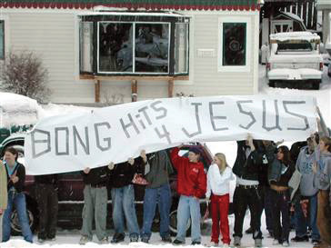
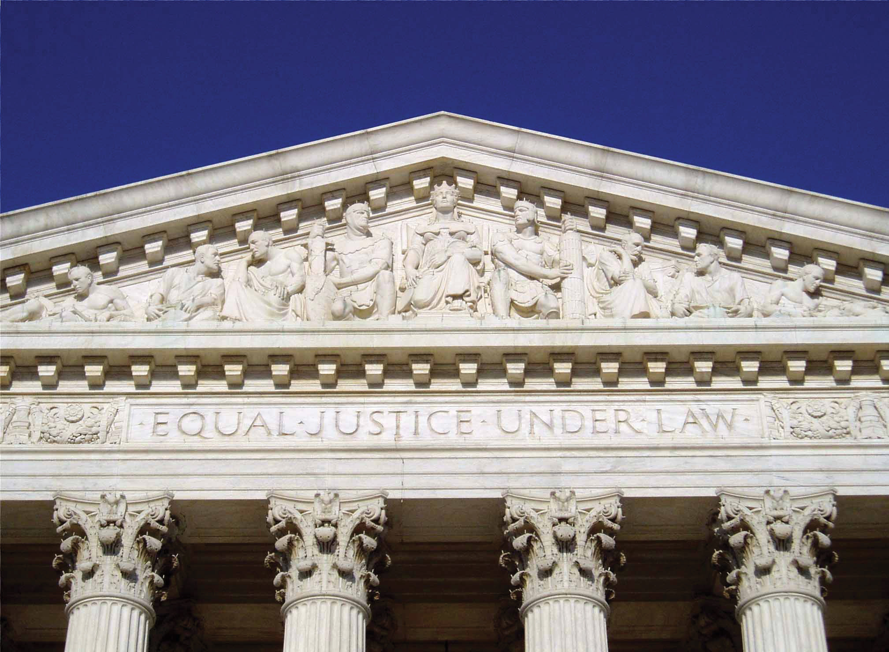

The ink on the Constitution was barely dry when the first Congress began turning its attention to amending it. During the debate surrounding the Constitution, there was much discussion about whether or not an explicit protection of civil liberty was necessary. Some believed that the British common-law system implicitly protected civil liberties, so a written declaration of rights wasn’t necessary. Others believed that the Constitution created a strong federal government and that a written declaration of rights was therefore critically necessary. In 1789, the same year the Constitution went into effect, Congress proposed ten amendments to the Constitution, a package that became known as the Bill of RightsThe first ten amendments to the U.S. Constitution.. Within two years, the Bill of Rights had garnered the necessary votes to become law.
When we speak of civil liberties protected in the Constitution, we often think of how these liberties apply to people. Although the Constitution does not contain the word “corporation,” corporations have some characteristics of being a “person,” so various courts have held that several of these civil rights also apply to business entities. In this section we’ll take a closer look at how these rights apply to businesses. In particular, we’ll examine the First, Fifth, and Fourteenth amendments.
Before we begin, it’s worth making some observations about civil liberties generally. First, there are no absolute rights, in spite of the wording of any specific amendment. For example, the First Amendment states that “Congress shall make no law abridging the freedom of speech.” In fact, there are many laws that limit the freedom of speech. You aren’t allowed to libel or slander someone, for example, or incite a crowd into a riot. Instead of absolute rights, courts have to constantly balance competing interests in deciding where the limits of our rights lie. The right of the public to know information about the lives of politicians and other high-profile figures, for example, must often be balanced by the right those citizens have to their own privacy.
Second, it’s fair to say that while the Constitution sets up a system of government based on principles of representative democracy, the Bill of Rights exists to protect the minority, not the majority. The vast majority of Americans will go through life without ever having their constitutional rights trampled on. It is for the very small minority of Americans that find themselves victims of constitutional violations that we find the greatest strength of the Bill of Rights. For this reason, many issues raised by civil liberties generally rise above the political process, where the majority generally prevails. For example, public opinion polls show that well over 95 percent of Americans feel that burning the American flag should be illegal. When such an overwhelming majority agrees on something, in a democracy the majority should prevail. In our democracy, however, the Supreme Court has stepped in and decided that the First Amendment will protect the very tiny percentage of the American population that wishes to burn the flag as a display of political opposition. Additionally, it’s important to note that the only reason those of us in the majority know where the boundaries of our civil liberties lie is because of that tiny minority. If Americans weren’t willing to test the boundaries by burning the flag or joining the Communist Party or refusing to take loyalty oaths or refusing to send their Amish children to public schools, then our civil liberties would remain theoretical ideals rather than concrete rights. Finally, note that other than the right to vote, the civil liberties protected by the Constitution extend to all persons physically on U.S. soil, not just citizens or legal immigrants. Persons visiting the United States temporarily, such as tourists and students, as well as undocumented aliens, are all entitled to the full protections of the U.S. Constitution while subject to U.S. law.
Third, the extent of our civil liberties protections vary from time to time. Society evolves with progress and challenges, and with that evolution, different needs arise in the realm of civil liberties. The Founding Fathers could not contemplate a digital world where an act of defamation on Facebook can spread to millions of people in a matter of hours, or imagine a society as pluralistic and diverse as ours has become. One constitutional amendment, the Eighth, illustrates how time shifts the meaning and application of civil liberty. The Eighth Amendment prohibits “cruel and unusual” punishment. The Supreme Court, in defining what “cruel and unusual” is, looks to “evolving standards of decency” in making the determination—in other words, what is cruel and unusual today may have been normal in years past.
Finally, major portions of the Bill of Rights apply equally to the states as they do the federal government. When adopted, the amendments were meant to restrict the federal government only (for example, “Congress shall make no law respecting an establishment of religion.”). States were not similarly restricted, and many states did in fact establish official state churches in the early days of the United States. After the Civil War, the Constitution was amended to include the Fourteenth Amendment, which prevents any state from depriving citizens of their rights without “due process of law.” Gradually, throughout the twentieth century, the Supreme Court developed a doctrine called incorporationThe doctrine by which certain provisions of the Bill of Rights are applied against the states., by which the limitations on government behavior in the Bill of Rights were extended to apply to the states as well. While many portions of the Bill of Rights apply to the states, not all of it does. There is no requirement, for example, that states use a grand jury system to indict criminals. There is also no requirement that states provide juries in civil trials.
http://www.npr.org/templates/story/story.php?storyId=128182208
In 2008 the Supreme Court handed down a major victory for gun owners and gun rights advocates by declaring that a ban on handguns in the District of Columbia was unconstitutional under the Second Amendment, which the Court held protected an individual’s right to possess a firearm in private homes in Washington, DC, and other federal territories.District of Columbia v. Heller, 554 U.S. ___ (2008), http://www.law.cornell.edu/supct/html/07-290.ZS.html (accessed October 2, 2010). Soon after the case was decided, several lawsuits were filed across the nation, challenging similar bans on handguns in various states. In 2010 the Supreme Court decided that the Second Amendment is indeed incorporated against the states, meaning that state laws banning the possession of handguns in private homes are unconstitutional.McDonald v. Chicago, 561 U.S. ___ (2010), http://www.supremecourt.gov/opinions/09pdf/08-1521.pdf (accessed October 2, 2010).
We turn our attention first to the First Amendment. The First Amendment contains several important clauses pertaining to speech and religion. The two different clauses on religion are designed to be almost always in conflict with each other. On the one hand, the First Amendment prohibits the government from establishing any religion—this is called the Establishment ClauseThe section of the First Amendment prohibiting government from establishing a religion.. On the other hand, the First Amendment prohibits the government from restricting the free exercise of religion—this is called the Free Exercise ClauseThe section of the First Amendment prohibiting government from preventing the free exercise of religion.. The conflict arises when some segments of society believe that the Free Exercise Clause means that they can practice their religion freely and openly, such as in a public school or city hall. Those who believe in what Thomas Jefferson called a “wall of separationThe phrase coined by Thomas Jefferson (in a letter to the Danbury Baptist Association after it congratulated him on his election) to describe the Establishment Clause.” between church and state, on the other hand, believe that the Free Exercise Clause must be subservient to the Establishment Clause, which would strictly prohibit such public displays of religious life.
As is often true in Bill of Rights cases, courts have had to fashion a test to draw the lines between these two competing visions of the Establishment and Free Exercise clauses. Generally speaking, the use of public funds for religious purposes and the public display of religious life are generally acceptable as long as the primary motivation is not to advance a specific religion. A city that wishes to display a Christmas tree or nativity scene, for example, would be permitted to do so as part of a general holiday-themed cultural display that also included a menorah and Rudolph, while a public high school that wished to have a public prayer before a football game would be prohibited. Several evangelical Christian groups have campaigned hard to de-emphasize teaching evolution in public high schools, replacing it with an alternative theory called intelligent designAn alternative theory on the origin of life that states the universe is too complex to be explained by science alone., which states that the universe is so complex that it is impossible to be explained by random nature and, therefore, an intelligent entity designed it. In one high-profile trial involving a lawsuit against a school board for adopting intelligent design, a Republican-appointed federal judge found intelligent design to be a thin disguise for the teaching of Bible-based creationism, a violation of the Establishment Clause.Kitzmiller v. Dover Area School District, 400 F. Supp. 2d 707 (M.D. Pa. 2005). On the other hand, the Supreme Court has found that the use of public funds to display the Ten Commandments on public lands such as parks is not automatically an Establishment Clause violation, depending on the context in which the monument or statue was erected.Van Orden v. Perry, 545 U.S. 677 (2005).
The First Amendment also protects the right to freedom of speech. While many nations believe in the right of citizens to think and speak freely, the United States is fairly unique in enshrining those principles into constitutional law. As is true in most Bill of Rights cases, the cases that test the limits of the First Amendment tend to be ones that involve the most unpopular, even heinous, speech. For example, after World War II many European nations outlawed the Nazi Party along with any Nazi propaganda material, as well as neofascist ideology. As a result, many pro-Nazi and white supremacist Web sites, books, catalogs, and music are hosted in the United States, where the First Amendment protects even hateful speech.
Not all speech is protected by the First Amendment; the type of speech very much drives the level of protection afforded it under the First Amendment. Courts generally recognize political speechAny speech dealing with politics or political figures. as speech most deserving of protection. Political dissent, displeasure with the government, forced loyalty oaths, restrictions on party membership, and even speech advocating the overthrow of government, all deserve extraordinary protection under the First Amendment. Political speech isn’t always written or uttered—it can sometimes take place through symbolic speechSpeech that is not uttered or printed but displayed or performed instead.. The Supreme Court has held, for example, that burning the U.S. flag as a form of protest against U.S. government policy is symbolic speech, and therefore attempts to criminalize flag burning are unconstitutional restrictions on political speech.Texas v. Johnson, 491 U.S. 397 (1989).
On the other end of the spectrum is speech that deserves no protection under the First Amendment at all, such as speech that incites a panic (yelling “Fire” in a crowded theater when there is no fire, for example). DefamationFalse statements that impugn or damage someone’s character or credibility. is another type of speech that falls into this category, and both libelWritten forms of defamation. and slanderSpoken forms of defamation. are actionable torts. ObsceneA legal standard that, if met, means the work in question has no protection under the First Amendment. speech is also not subject to any protection under the First Amendment. Defining what is obscene has always vexed courts. The best test courts have developed is called the Miller test.Miller v. California, 413 U.S. 15 (1973). Under the Miller test, material is considered obscene if when applying contemporary community standards, the work, taken as a whole, appeals to a prurient interest in sex; portrays sexual conduct as specifically defined by applicable state law; and lacks serious literary, artistic, political, or scientific value. It’s important to keep in mind, however, that even obscene and defamatory speech is subject to the doctrine of prior restraintA doctrine that prevents the government from restricting or punishing speech before it is uttered or published, in case the speaker changes his or her mind before proceeding.. Attempts to shut down the speech before it is uttered are considered unconstitutional.
http://www.npr.org/templates/story/story.php?storyId=10741235
Although the First Amendment generally prevents the U.S. government from engaging in censorship, an exception exists for broadcast radio and television. Unlike cable and satellite programming, which requires viewers and listeners to “opt in” with a paid subscription to access content, broadcast radio and television use the public airwaves to carry transmissions that are readily accessible for free by anyone with a television or a radio. In 1973, in a case involving comedian George Carlin’s “Dirty Words” monologue, the Supreme Court held that although the monologue wasn’t obscene, the government (through the Federal Communications Commission, or FCC) could nonetheless regulate indecent material when vulnerable listeners, such as children, may be listening.F.C.C. v. Pacifica, 438 U.S. 726 (1978). Under this authority, the FCC enforces the “fleeting expletives” rule, which fines broadcasters for airing even momentary exclamations of profanity during live broadcasts. In 2010, after several rounds of litigation, the Second Circuit Court of Appeals held the FCC’s policy was unconstitutionally vague.
One area of First Amendment law that remains unsettled is what rights corporations have to speak, also known as commercial speechSpeech made by nonhuman entities.. In the early part of the twentieth century, the Supreme Court found that corporations had virtually no protection under the First Amendment. This view gradually evolved as the role and influence of companies grew. Today, corporations engage not just in purely commercial speech such as product advertising but also in matters of public policy, from globalization to human rights to environmental protection and global warming. In 2002 it looked like the Supreme Court would finally issue some guidance on this issue.Nike v. Kasky, 539 U.S. 654 (2003). In California, Nike Inc. was under fire from labor activists for allegedly engaging in sweatshop conditions in its foreign factories, including hiring child labor. In response to these allegations, Nike issued a series of press releases and denials, the “speech” in this case. Several activists filed lawsuits against Nike, claiming that these press releases and denials constituted false advertising by a company, which is against California law. Nike’s defense was that the press releases were more like political speech and were therefore protected by the First Amendment. Nike lost the argument in California state courts, and when the U.S. Supreme Court agreed to hear the case, the parties settled before the case could proceed any further.
In early 2010, however, the Supreme Court handed down another important decision on the rights of corporations to speak.Citizens United v. Federal Election Commission, 558 U.S. ___ (2010), http://www.fec.gov/ law/litigation/cu_sc08_opinion.pdf (accessed October 2, 2010). In striking down federal and twenty-two state restrictions on corporate spending on political campaigns, the Supreme Court held that corporations are persons and therefore entitled to engage in political speech. Since corporations are unable to literally “speak,” they speak through spending money, and thus restrictions on how corporations may spend money during political campaigns are unconstitutional. The four dissenting justices worried about the implications of this ruling. If corporations aren’t allowed to vote, then why should corporations be allowed to spend freely to drown out the voices of real voters, who have no hopes of matching corporate spending on issue advertisements? Similarly, foreign persons have the same rights as U.S. citizens in making speeches on U.S. soil. If corporations are persons for purposes of speech, then it stands to reason that foreign corporations operating in the United States are entitled to the same protections and can also spend freely to influence U.S. elections. The implications of this ruling will likely be felt for many years to come.
Not all protected speech is protected all the time in all places. The government is permitted to place reasonable time, place, and manner restrictions on speech to maintain important governmental functions. These restrictions are generally upheld if they further an important or substantial governmental interest, they are unrelated to the suppression of free expression (in other words, are content neutral), and any restriction on First Amendment freedoms is no greater than that necessary to further governmental interests (the restriction is not overbreadthA law that covers legal conduct as well as illegal conduct.). Thus, for example, courts have upheld restrictions on posting signs on city-owned utility poles and picketing or protest permit requirements. On the other hand, when Congress tried to make it illegal for commercial Web sites to allow minors to access “harmful” content on the Internet in the Child Online Protection Act (COPA), the Supreme Court held the Act unconstitutional because of the overbreadth doctrine.ACLU v. Ashcroft, 535 U.S. 564 (2002). The Court found there were less restrictive alternatives than the Act, such as blocking and filtering software, and therefore the burdens placed by COPA on the First Amendment, by sweeping both legal as well as illegal behavior, were too heavy to be constitutional.
Figure 5.4 Joseph Frederick and Bong Hits 4 Jesus
Source: Photo courtesy of Clay Good / Zuma Press, http://en.wikipedia.org/wiki/File:Bh4j.jpg.
Does this doctrine permit school officials to curb the free speech rights of high school students, who otherwise have rights outside of school hours? In 2002 an eighteen-year-old high school senior was suspended after he (with help from some friends) unfurled a banner during the Olympic torch relay through his town. The student, Joseph Frederick, was not in school that day and was standing across the street from the school when he unfurled the banner (Figure 5.4 "Joseph Frederick and Bong Hits 4 Jesus"). When asked later what the banner meant, Frederick replied that it was a nonsensical phrase he saw on a sticker while snowboarding. Frederick sued his high school principal for violating his First Amendment rights and won in the lower courts. On appeal, however, by a 5–4 decision the Supreme Court held that the school, which has a zero-tolerance policy on drug use, could restrict a student’s prodrug message even in these circumstances.Morse v. Frederick, 551 U.S. 393 (2007).
Another important restriction on governmental authority actually appears twice in the Constitution. The due processFundamental fairness and decency. clause appears in both the Fifth Amendment (“No person shall…be deprived of life, liberty or property without due process of law”) and the Fourteenth Amendment (“Nor shall any State deprive any person of life, liberty, or property, without due process of law”). The Fifth Amendment applies to the federal government, and after the Civil War, the Fourteenth Amendment made due process applicable to the states as well. At its core, due process means “fundamental fairness and decency.” The clause requires that all government action that involves the taking of life, liberty, or property be done fairly and for fair reasons. Notice that the due process clause applies only to government action—it does not apply to the actions of private citizens or entities such as corporations or, for that matter, to actions of private universities and colleges.
As interpreted by the courts, the due process clause contains two components. The first is called procedural due processGovernment must use fair procedures.. Procedural due process requires that any government action that takes away life, liberty, or property must be made fairly and using fair procedures. In criminal cases, this means that before a government can move to take away life, liberty, or property, the defendant is entitled to at least adequate notice, a hearing, and a neutral judge. For example, in 2009 the Supreme Court held that a state Supreme Court judge’s refusal to remove himself from a case involving a big campaign donor violated the procedural due process clause promise for a neutral judge.
http://www.npr.org/templates/story/story.php?storyId=105143851
Hugh Caperton, a small coal mine operator in West Virginia, sued the giant Massey Coal Company, alleging that Massey used illegal tactics to force him out of business. A jury awarded Caperton more than fifty million dollars in damages. When Massey appealed the case to the West Virginia Supreme Court, he spent more than three million dollars on a campaign to defeat an incumbent judge and promote another judge, who then refused to excuse himself from the appeal and ended up casting the swing vote in a 3–2 decision to overturn the fifty-million-dollar award. On appeal to the Supreme Court, the Court held that the judge’s actions violated procedural due process.
The second component of the due process clause is substantive due processLegislation must be fair.. Substantive due process focuses on the content of government legislation itself. Generally speaking, government regulation is justified whenever the government can articulate a rational reason for the regulation. In certain categories, however, the government must articulate a compelling reason for the regulation. This is the case when the regulation affects a fundamental right, which is a right deeply rooted in American history and implicit in the concept of ordered liberty. The government must also set forth compelling reasons for restricting the right to vote or the right to travel. Since substantive due process is a fairly amorphous concept, it is often used as a general basis for any lawsuit challenging government procedures or laws that affect an individual’s or company’s civil liberties.
When Can a State Force Sterilization?
http://www.usatoday.com/news/health/2009-06-23-eugenics-carrie-buck_N.htm
In the early 1920s, the state of Virginia experimented with a eugenics program in an attempt to improve the human race by eliminating “defects” from the human gene pool. As part of this program, Virginia approved a law that would allow the forced sterilization of inmates in state institutions. Eighteen-year-old Carrie Buck became the first woman sterilized under this program. Buck, who had been raped by a nephew, was committed to the Virginia State Colony for Epileptics and Feeble-minded in Lynchburg, Virginia. Her birth mother was also committed, as was her daughter. When Buck challenged Virginia’s law at the Supreme Court, Justice Oliver Wendell Holmes overruled her due process objections, holding that “it is better for all the world, if instead of waiting to execute degenerate offspring for crime, or to let them starve for their imbecility, society can prevent those who are manifestly unfit from continuing their kind…Three generations of imbeciles are enough.”Buck v. Bell, 274 U.S. 200 (1927). Buck became the first of tens of thousands of Americans forced to undergo sterilization as part of a general belief in eugenics, a belief apparently shared by members of the Supreme Court. Read the linked article to learn more about Carrie Buck, including the total lack of any evidence of mental defect when she was sterilized.
Businesses have used the substantive due process clause to limit the award of punitive damagesDamages awarded to plaintiffs not to compensate them for harm caused but to prevent similar conduct by the defendants in the future. in tort cases. They argue that a startlingly high punitive damage award is a state-sanctioned deprivation of property, which means the due process clause is implicated. Furthermore, if the award is grossly excessive, then due process is violated. In 1996 the Supreme Court heard an appeal from German automobile manufacturer BMW arising from a case from Alabama.BMW of North America Inc. v. Gore, 517 U.S. 559 (1996). The plaintiff argued that although he bought his car new, it had in fact suffered some paint damage while in transit to the dealer, and the damage was not disclosed to him. When he found out about the prior damage, he sued BMW, arguing that BMW’s policy (which is that if damage to new cars can be repaired for 3 percent of the car’s value or less, then the car can be repaired and sold as new) damaged the resale value of his car. It cost six hundred dollars to fix the actual damage to his car, and the jury awarded him four thousand dollars in compensatory damages for the lost resale value on his car. The jury then awarded him four million dollars in punitive damages, which the Alabama Supreme Court reduced to two million. The Supreme Court found the punitive damages award unconstitutional under the due process clause. In its holding, the Court said that there are three factors that determine if a punitive damage award is too high. First is the degree of reprehensibility of the defendant’s conduct. Second is the ratio between the compensatory and punitive damage award; generally, this ratio should be less than ten. Finally, courts should compare the punitive damage award with civil or criminal penalties awarded for similar misconduct. The Court reiterated its holding again in a case involving a $145 million punitive damage award against State Farm in a case where the compensatory award was one million dollars.State Farm Mut. Automobile Ins. Co. v. Campbell, 538 U.S. 408 (2003). Interestingly, Justices Scalia and Thomas, both conservative and generally seen as friendly to business interests, dissent from this view, finding that nothing in the due process clause prevents high punitive damage awards.
The final constitutional protection we’ll consider here is the Equal Protection ClauseThe portion of the Fourteenth Amendment requiring states to provide the equal protection of laws to persons within their jurisdiction. of the Fourteenth Amendment. The clause states that “No state shall deny to any person within its jurisdiction the equal protection of the laws.” As discussed previously, this clause incorporates Constitutional protections against the states in addition to the federal government. Although drafted and adopted in response to resistance to efforts at integration of African Americans in the South after the Civil War, the promise of the Equal Protection Clause (enshrined at the Supreme Court building, Figure 5.5 "U.S. Supreme Court Building") continues to find application in all manner of American public life where discrimination is an issue.
Figure 5.5 U.S. Supreme Court Building
Source: Photo courtesy of UpstateNYer, http://en.wikipedia.org/wiki/File:CourtEqualJustice.JPG.
The Equal Protection Clause is implicated anytime a law limits the liberty of some people but not others. In other words, it operates to scrutinize government-sponsored discrimination. While the word “discrimination” has a negative connotation, in legal terms not all discrimination is illegal. A criminal law might discriminate against those who steal, for example, in favor of those who don’t steal. The Equal Protection Clause seeks to determine what forms of discrimination are permissible.
To establish a guideline for courts to use in answering equal protection cases, the Supreme Court has established three standards of review when examining statutes that discriminate. The three standards are known as minimal scrutiny, intermediate scrutiny, and strict scrutiny.
In the minimal scrutinyThe standard of review in which government must provide rational basis for the law. test, think of the courts turning on a twenty-watt lightbulb to look at the statute. There’s enough light to see the statute, but the light is so dim that the judges won’t examine the statute in great detail. Under this standard, government needs to put forth only a rational basis for the law—the law simply has to be reasonably related to some legitimate government interest. If the judge is satisfied that the law is based on some rational basis (keeping in mind that with the twenty-watt lightbulb, the inquiry isn’t very deep), then the law passes equal protection. Thus, a law that imprisons thieves easily passes minimal scrutiny, since there are many rational reasons to imprison thieves. As a matter of course, the vast majority of cases that are scrutinized under minimal scrutiny easily pass review. Most laws fall into this category of scrutiny by default—courts apply heightened scrutiny only in special circumstances. Even under this low standard, however, governments must be able to articulate a rational basis for the law. For example, in 1995 Colorado approved a state constitutional amendment that would have prevented any city, town, or county in Colorado from recognizing homosexuals as a protected class of citizens. The Supreme Court struck down the constitutional amendment, finding there was no rational basis for it and that it was in fact motivated by a “bare desire to harm a politically unpopular group.”Romer v. Evans, 517 U.S. 620 (1996).
The intermediate scrutinyThe standard of review in which government must prove the law is substantially related to an important government interest. test is reserved for cases where the government discriminates on the basis of sex or gender. Under this test, the government has to prove that the law in question is substantially related to an important government interest. Think of the courts turning on a sixty-watt lightbulb in this test, because they’re expecting the government to provide more than just a rational justification for the law. Using this test, courts have invalidated gender restrictions on admissions to nursing school, laws that state only wives can receive alimony, and a higher minimum drinking age for men. In one important case, the Supreme Court held that the system for single-sex education at the Virginia Military Institute violated the Equal Protection Clause.United States v. Virginia, 518 U.S. 515 (1996). On the other hand, courts have been willing to tolerate gender discrimination in the male-only Selective Service (military draft) system.
The strict scrutinyThe standard of review in which government must prove the law is justified by a compelling government interest. test is used when the government discriminates against a suspect class. Under this test, the government has to prove that the law is justified by a compelling governmental interest, that the law is narrowly tailored to achieve that goal or interest, and that the law is the least restrictive means to achieve that interest. Here, the courts are turning on a one-hundred-watt lightbulb in examining the law, so they can examine the law in great detail to find justification. The standard is reserved for only a few classifications: laws that affect “fundamental rights” such as the rights in the Bill of Rights and any government discrimination that affects a “suspect classification” such as race or national origin. In practice, when courts find that strict scrutiny applies, a law is very often struck down as unconstitutional because it’s so hard for government to pass this standard of review. Certainly, most laws that discriminate on the basis of race are struck down on this basis. There are a few exceptions, however, where the Supreme Court has held that racial discrimination may be permissible even under strict scrutiny. The first case rose in the height of World War II, when the federal government sought to intern Japanese Americans into camps on the basis that they may pose a national security risk. Fred Korematsu sued the federal government under the equal protection clause, arguing that as an American citizen the government was unfairly discriminating against him on the basis of race, especially in light of the fact that Americans of Italian and German descent were not treated similarly. In a 6–3 decision, the Supreme Court sided with the government.Korematsu v. United States, 323 U.S. 214 (1944). Although that decision has never been overturned, the U.S. government officially apologized for the internment camps in the 1980s, paid many millions of dollars in reparationsCompensation for past injury., and eventually awarded Fred Korematsu the Presidential Medal of Freedom.
A second case involving the use of racial discrimination surrounds the issue of affirmative actionThe practice of providing affirmative action to targeted populations to achieve diversity goals. in higher education. Many elite colleges and universities would have no problem filling their entire entering class with stellar academic students with high grade point averages and standardized testing scores. If they did this, however, their classrooms would generally look quite similar, as these students tend to come from a largely white, upper-middle-class socioeconomic profile. In a belief that diversity adds value to the classroom learning experience, the University of Michigan added “points” to an applicant’s profile if the applicant was a student athlete, from a diverse racial background, or from a rural area in Michigan. When this practice was challenged, the Supreme Court found that this point system operated too much like a race quota, which has been illegal since the 1970s, and overturned the system.Gratz v. Bollinger, 539 U.S. 244 (2003). In a challenge by a law school applicant denied admission, however, the Supreme Court upheld the law school’s system, which rather than assigning a mathematical formula, used a system where race was only a “potential plus factor” to be considered with many other factors.Grutter v. Bollinger, 539 U.S. 306 (2003). After extensive briefing, including a record number of amicus briefs, the Court found that diversity in higher education is a compelling enough state interest that schools could consider race in deciding whether or not to admit students. The Court did caution, however, that schools should move toward race-neutral systems and that affirmative action should not last more than twenty-five more years.
The Bill of Rights provides key civil liberties to all Americans and persons on U.S. soil. These liberties are never absolute, subject to competing interests that courts must balance in making their decisions. These rights also vary from time to time and are generally designed to protect the weakest in society rather than the strongest. Many, but not all, of the restrictions on government activity found in the Bill of Rights also apply to the states through incorporation. The First Amendment prohibits the government from establishing religion and from restricting the free exercise thereof. The First Amendment also prohibits the government from restricting the freedom of speech. Political speech is protected to the fullest extent by the First Amendment, while obscene and defamatory speech is not protected at all but subject to the doctrine of prior restraint. Corporations have some free speech rights under the corporate speech doctrine. Generally speaking, states may impose reasonable time, place, and manner restrictions on the delivery of speech. Procedural due process requires that the government use fair procedures anytime it seeks to deprive a citizen of life, liberty, or property. Substantive due process requires the government to articulate a rational basis for passing laws or, when fundamental rights are involved, to articulate a compelling reason to do so. Substantive due process has been used by the Supreme Court to limit punitive damage amounts. Equal protection requires the government to justify discrimination. In cases of racial discrimination, courts apply strict scrutiny to the law. In cases involving sex or gender discrimination, the courts apply an intermediate level of scrutiny, and in all other cases, courts apply a minimal basis of scrutiny.